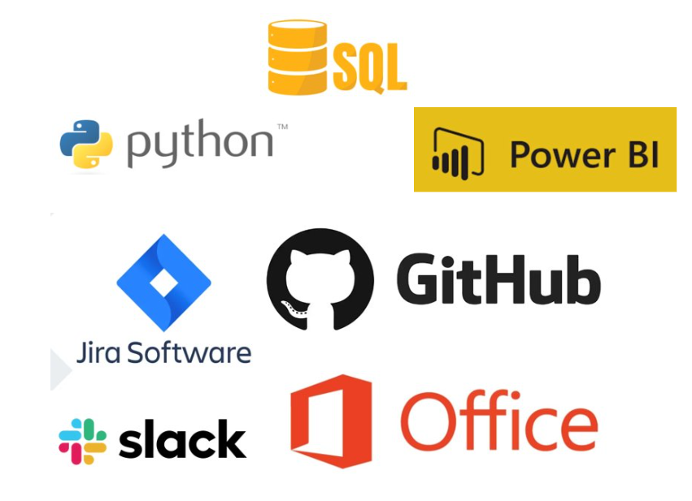

LogiMax Insights
Índice
Projeto (API)
O projeto, fundamentado na metodologia Ágil Scrum, visa realizar a análise da eficiência das rotas em uma empresa embarcadora, com o objetivo de aprimorar a distribuição e, assim, diminuir os custos logísticos.
Equipe
| Função |
Nome |
LinkedIn & GitHub |
| Product Owner |
Laura Barros |
LinkedIn
GitHub
|
Objetivo do Projeto
O propósito deste projeto é aprimorar as rotas de três unidades de uma mesma empresa através da aplicação de métodos de pesquisa operacional...
Resultados Esperados
O resultado desejado do modelo de otimização usando pesquisa operacional é a definição das rotas de transporte mais eficazes entre as três plantas da empresa...
Cronograma das Sprints
| Sprint |
Previsão |
Status |
Histórico |
| Kick Off |
03/09/2024 |
Concluído |
Ver Relatório |
Backlog do Produto
- Modelo de Banco de dados consolidados em SQL
- Visualização gráficas iniciais de métricas importantes...
- Método de transporte e otimização em Python
Tecnologias Utilizadas

Competências Desenvolvidas
Hard Skills desenvolvidas
| Tecnologia/Metodologia | Classificação |
|---|
| GitHub | ★★★★★★☆☆☆ |
Soft Skills desenvolvidas
| Habilidades | Classificação |
|---|
| Colaboração | ★★★★★☆☆☆☆ |